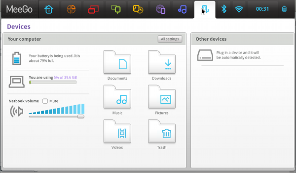

Using brightness hotkeys on Meego [Samsung NC10]
This entry applies specifically to Meego 1.0; there is already an updated version (1.1) since the 28th October 2010 which should make this entry obsolete
On my netbook, Samsung NC10, Meego handles properly almost all the hardware. One exception is some of the hotkeys, and specially the brightness keys. As it goes, X11 recognizes them properly, but no action is triggered; handling the brightness is as easy as updating properly the values on the file:
/sys/class/backlight/acpi_video0/brightness
For example:
echo 4 > /sys/class/backlight/acpi_video0/brightness
would set middle brightness on this netbook [possible values are 0-7]. In any case, the previous line will fail, as the file has root permissions, so it is needed to sudo it.
Whatever the action is, it is needed to configure the keyboard to handle it, and this is directly supported in Meego, with two caveats:
- Updating the brightness requires root permissions.
- Associating a shell script on the keys configuration seems not to work.
So, the basic solution is to write a very basic C program, setuid it with root privileges, and associate it to the brightness keys. Easy as said, the program is as simple as:
/*
Copyright (c) 2010 Luis M. Pena - lu@coderazzi.net [http://coderazzi.net]
MIT open source license: http://www.opensource.org/licenses/mit-license.php
*/
#include <errno.h>
#include <stdio.h>
#include <stdlib.h>
#include <string.h>
#define ACTUAL_BRIGHTNESS_FILE "/sys/class/backlight/acpi_video0/actual_brightness"
#define BRIGHTNESS_FILE "/sys/class/backlight/acpi_video0/brightness"
#define MAX_BRIGHTNESS_FILE "/sys/class/backlight/acpi_video0/max_brightness"
#define BUFFER_SIZE 5
#define INVALID -1
int read(const char *file){
int ret;
char buffer[BUFFER_SIZE];
FILE *f = fopen(file, "r");
if (!f || !fgets(buffer, BUFFER_SIZE, f)){
ret=INVALID;
fprintf(stderr, "Could not read %s\n", file);
} else {
ret = strtol(buffer, (char **)0, 10);
if (errno == EINVAL){
ret=INVALID;
fprintf(stderr,
"Error reading %s; unexpected content:%s \n", file, buffer);
}
}
if (f) fclose(f);
return ret;
}
int brightness(int incr){
int current = read(ACTUAL_BRIGHTNESS_FILE);
int max = incr<1? current : read(MAX_BRIGHTNESS_FILE);
int ret = 1;
if (current!=INVALID && max!=INVALID){
if (incr>0 && current>=max){
fprintf(stderr, "brightness already at max level\n");
} else if (incr<0 && current<=0){
fprintf(stderr, "brightness already at min level\n");
} else {
FILE *f = fopen(BRIGHTNESS_FILE, "w");
if (f && fprintf(f, "%d", current+incr)>0){
ret=0;
} else {
fprintf(stderr, "Error writing to %s\n", BRIGHTNESS_FILE);
}
if (f) fclose(f);
}
}
return ret;
}
int main(int argc, char **argv){
if (argc==2){
if (!strcmp(argv[1], "up")){
return brightness(1);
} else if (!strcmp(argv[1], "down")){
return brightness(-1);
}
}
fprintf(stderr, "Please use: %s [up|down]\n", argv[0]);
return 1;
}
It can be compiled -if the gcc package is installed-, or just downloaded from here (6435 bytes):
- Source: brightness.c [md5: f444af47c26a68ae8bfcd172ef6eaa99]
- Executable: brightness [md5: e866002c51f8967b06c7e6af94f95748]
Compiled or downloaded, store the executable as:
/usr/local/bin/brightness
Associate it now to root:
sudo chown root:root /usr/local/bin/brightness
And setuid to execute with root privileges:
sudo chmod 4755 /usr/local/bin/brightness
You can try it now by executing it as:
/usr/local/bin/brightness up
or
/usr/local/bin/brightness down
It should update the screen's brightness. Time now not associate it to the appropriated hotkeys: open the devices configuration:

Get there to the keyboard option, under All Settings, and activate the keyboard shortcuts:

Now, add a new shortcut, pressing the Add button, and enter:
- Name: brightness up
- Command: /usr/local/bin/brightness up
It will appear under Custom shortcuts; select its shortcut, that will initially appear as disabled; as soon as it is selected, it will change to New shortcut...: press now the brightness up hotkey: its caption will automatically change to XF86MonBrightnessUp.
Repeat now the same process to handle brightness down: add a new shortcut, pressing the Add button, and enter:
- Name: brightness down
- Command: /usr/local/bin/brightness down
After associating it to the brightness down key will appear as XF86MonBrightnessDown.
And that is all! In fact, it should be still associated to a nice applet to show the brightness change, but not for the time being!